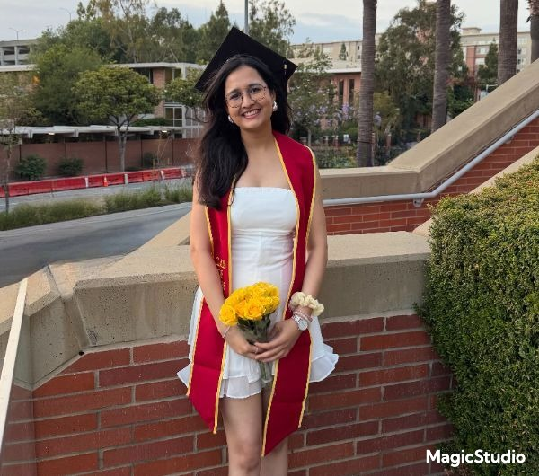
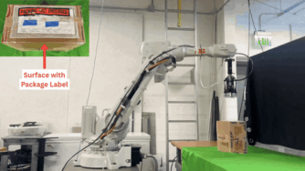
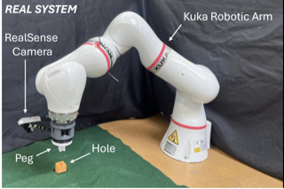

|
Nikita Sarawgi
I'm a robotics engineer at GrayMatter Robotics, working on closed-loop active perception and decision-making for robots on industrial shopfloors.
I completed my M.S. in Computer Science at USC Viterbi in December 2025, advised by Satyandra K. Gupta and Daniel Seita, with research conducted in collaboration with Amazon Robotics.
My research interests include developing systems that can reason through uncertainty and that can adapt rather than fail silently, with a focus on robot manipulation. More concretely, my work aims to improve generalization and robustness in new, unseen environments by composing learned behaviors to solve a given robotic task.
Email /
Scholar /
LinkedIn /
Github
|

|
|
May 2026
|
I'll be attending ICRA 2026 in Vienna this June. Please reach out if you are around and would like to connect!
|
|
February 2026
|
I joined GrayMatter Robotics full-time as a robotics engineer.
|
|
January 2026
|
Our paper, STEP, was accepted to ICRA 2026. Hope to see you in Vienna!
|
|
December 2025
|
I completed my M.S. in Computer Science from USC Viterbi.
|
|
October 2025
|
I joined GrayMatter Robotics as a robotics intern, working on translating learning-based manipulation research into deployable perception and control systems for high-mix manufacturing.
|
Publications
Research at the intersection of robot learning, active perception, and reasoning under uncertainty. Selected work below.
|
|

|
Preference-Conditioned Reinforcement Learning for Space-Time Efficient Online 3D Bin Packing
Nikita Sarawgi, Omey M. Manyar, Fan Wang, Thinh H. Nguyen, Daniel Seita, Satyandra K. Gupta
ICRA, 2026
project page
/
code
An RL policy for online 3D bin packing that chooses both the next item to pack and the face to grasp it on. A preference parameter set at inference time trades off packing density against operation time without retraining.
|
|

|
Autonomous Execution of Insertion Operations in Space Assembly Tasks
Abhay Negi, Nikita Sarawgi, Dhanush Penmetsa, Hantao Ye, Omey Manyar, Ashtin Cheng, Satyandra K. Gupta
AIAA SciTech Forum (ISAM IV), 2025
paper
An autonomous insertion system for in-space assembly. The robot first estimates a coarse pose to position a wrist-mounted camera near the target, then uses a learned model to estimate fine misalignment, and executes the insertion under impedance control.
|
Website adapted from here.
|
|
{kind=link}